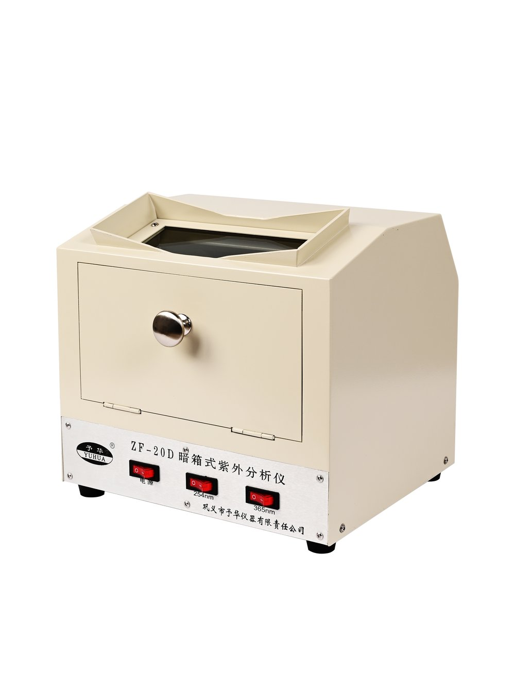

YSF / YSFT / YSFS / ZYSF / YDF
เครื่องปฏิกรณ์แก้ว
เหมาะสำหรับงานสังเคราะห์ การผสม การสกัด และงานทดลองที่ต้องการสังเกตกระบวนการภายใน
สอบถามรุ่น →ครอบคลุมงานปฏิกิริยา การระเหย การควบคุมอุณหภูมิ สุญญากาศ และการกลั่น สำหรับห้องปฏิบัติการ งานวิจัย และระบบระดับ pilot-scale


เลือกอุปกรณ์เดี่ยวหรือจัดเป็นระบบร่วมกันตามกระบวนการจริง โดยคงรุ่นและข้อมูลทางเทคนิคตามเอกสารของ YUHUA
เหมาะสำหรับงานสังเคราะห์ การผสม การสกัด และงานทดลองที่ต้องการสังเกตกระบวนการภายใน
สอบถามรุ่น →สำหรับการระเหย การกลั่น และการกู้คืนตัวทำละลายในห้องปฏิบัติการและงาน pilot-scale
สอบถามรุ่น →ระบบให้ความร้อนและความเย็นแบบหมุนเวียนสำหรับเครื่องปฏิกรณ์และกระบวนการควบคุมอุณหภูมิ
สอบถามรุ่น →
สำหรับจ่ายความเย็นให้กับเครื่องระเหย เครื่องปฏิกรณ์ และระบบทดลองที่ต้องการอุณหภูมิต่ำ
สอบถามรุ่น →
เหมาะสำหรับงานวิจัย งานทดลอง และระบบที่ต้องการโครงสร้างแข็งแรงหรือข้อกำหนดเฉพาะ
สอบถามรุ่น →
สำหรับงานแยกและทำให้บริสุทธิ์ของสารที่ไวต่อความร้อนหรือมีจุดเดือดสูง
สอบถามรุ่น →
ใช้สำหรับควบคุมอุณหภูมิต่ำและหมุนเวียนของเหลวในงานทดลองที่ต้องการความเย็นอย่างต่อเนื่อง
สอบถามรุ่น →ใช้งานร่วมกับเครื่องระเหย เครื่องปฏิกรณ์ งานกรอง และระบบสุญญากาศในห้องปฏิบัติการ
สอบถามรุ่น →
สำหรับการทดลองปฏิกิริยาเคมีด้วยไมโครเวฟ พร้อมระบบควบคุมที่ออกแบบสำหรับงานวิจัย
สอบถามรุ่น →ตัวอย่างผลิตภัณฑ์หลักที่สามารถใช้เดี่ยวหรือจัดร่วมกันเป็นระบบทดลอง
ใช้สำหรับการระเหย การทำให้เข้มข้น การกลั่น และการกู้คืนตัวทำละลาย เหมาะกับห้องปฏิบัติการและงาน pilot-scale
เหมาะสำหรับงานสังเคราะห์ การผสม การสกัด และกระบวนการที่ต้องการสังเกตสภาวะภายในระหว่างการทดลอง
ออกแบบสำหรับจ่ายความร้อนและความเย็นแบบหมุนเวียนให้กับเครื่องปฏิกรณ์และระบบทดลองที่ต้องควบคุมอุณหภูมิ
ใช้ในงานแยกและทำให้บริสุทธิ์ โดยเฉพาะกระบวนการที่ต้องการลดเวลาสัมผัสความร้อนและทำงานร่วมกับระบบสุญญากาศ
เมื่อลูกค้าแจ้งกระบวนการ ปริมาณงาน อุณหภูมิ และปลายทาง ทีมงานสามารถช่วยจับคู่เครื่องหลักกับอุปกรณ์เสริมได้
Rotary Evaporator + Low-temperature Circulator + Vacuum Pump
Glass Reactor + GDSZ + Vacuum Pump
Reactor + DFY / Cooling Circulator + Vacuum System
Molecular Distillation + Temperature Control + Vacuum System
YUHUA Instrument มีประวัติการผลิตย้อนหลังถึงปี 1986 และ 巩义市予华仪器有限责任公司 ก่อตั้งอย่างเป็นทางการในปี 2004 โดยมุ่งเน้นการพัฒนา ผลิต และจำหน่ายอุปกรณ์ห้องปฏิบัติการ รวมถึงระบบทดลองและอุปกรณ์สั่งทำ
ความจุ วัสดุ อินเทอร์เฟซ ระบบไฟฟ้า ช่วงอุณหภูมิ และการกำหนดค่าระบบตามข้อกำหนด
คู่มือ วิดีโอ และข้อมูลประกอบการติดตั้ง การใช้งาน และการบำรุงรักษา
รองรับการประสานอะไหล่ การดูแลหลังการขาย และการสนับสนุนทางเทคนิคระยะไกล
กรุณาระบุชื่อผลิตภัณฑ์ รุ่น จำนวน และประเทศ/เมืองปลายทาง เพื่อจัดทำราคาและค่าขนส่งแยกเป็นรายกรณี